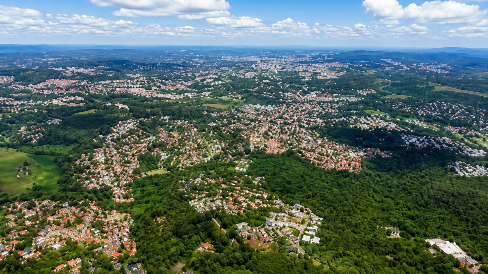

A região cresceu silenciosamente como um dos destinos mais procurados para o cuidado ao idoso na Grande SP — com bons motivos. Mas nem tudo o que parece bom na primeira visita realmente é.

Nos últimos anos, Cotia emergiu silenciosamente como uma das regiões mais estratégicas da Grande SP para o cuidado ao idoso. Não por acaso — por uma combinação de fatores que nenhum bairro nobre de São Paulo consegue oferecer ao mesmo tempo.
Propriedades maiores. Custo de metro quadrado mais acessível. Áreas verdes preservadas. Acesso direto pela Raposo Tavares e pelo Rodoanel. E um ambiente mais calmo — que pesquisas sobre bem-estar geriátrico consistentemente apontam como fator relevante na qualidade do envelhecimento.
Embora façam parte do mesmo município, Cotia e Granja Viana apresentam perfis bastante diferentes de mercado — e entender essa diferença ajuda a calibrar as expectativas da família.
Espaço, natureza e custo operacional equilibrado
A porção mais ampla do município oferece propriedades rurais e suburbanas com área generosa — o que permite residenciais com jardins extensos, corredores largos, áreas de convivência abertas e espaço real para mobilidade e atividades ao ar livre.
O custo operacional mais baixo permite residenciais bem estruturados em faixas de mensalidade mais acessíveis — sem que a redução de custo precise comprometer a qualidade do cuidado ou da estrutura física.
Alto padrão residencial, condomínios e cuidado diferenciado
Granja Viana é, historicamente, uma das regiões de maior padrão residencial da Grande SP — com condomínios fechados, infraestrutura de alto nível e um perfil de moradores que valoriza qualidade de vida de forma consistente.
Para residenciais sênior, isso significa um mercado com maior disposição para mensalidades mais altas em troca de hospitalidade diferenciada, arquitetura cuidada e uma proposta de cuidado que se aproxima de um hotel de longa permanência — com toda a estrutura clínica necessária.
Cotia tem tudo para ser uma das regiões mais bem estruturadas para o cuidado ao idoso na Grande SP. Mas existe um desafio que o potencial da região não resolve sozinho: a regularização junto à Anvisa e à Vigilância Sanitária municipal é um processo rigoroso — e muitas operações simplesmente não conseguem completá-lo.
As exigências regulatórias para uma ILPI são extensas e não negociáveis. Estrutura física acessível, equipe dimensionada por lei, protocolos documentados, licenças ativas e um responsável técnico formalmente registrado são apenas o ponto de partida. E o processo de obtenção e manutenção dessas autorizações exige investimento real, gestão séria e compromisso contínuo.
Dimensões mínimas de quartos, banheiros, corredores e espaços comuns definidos pela Anvisa.
Rampas, corrimões, piso antiderrapante, banheiros adaptados e ausência de barreiras físicas.
Número mínimo de cuidadoras por residente em cada turno, incluindo noturno e fins de semana.
Alvará municipal, notificação Anvisa, CNPJ ativo e registro do responsável técnico.
Plano documentado, treinamento da equipe e acesso real a hospital de referência.
Padrões de higiene, descarte de resíduos, controle de medicamentos e rotinas documentadas.
O que isso significa na prática: nem toda residência bonita em Cotia está regularizada. E nem toda residência que diz estar "em processo de licenciamento" completará esse processo dentro de um prazo previsível. Verificar antes de decidir não é desconfiança — é responsabilidade.
"Cotia tem as propriedades. Granja Viana tem o padrão. Mas o cuidado real não está no endereço — está na equipe, na documentação e na gestão por trás de cada porta."— Equipe SAFE ILPIS
A SAFE ILPIS não usa catálogos. Visitamos, documentamos e avaliamos cada residência antes de qualquer indicação. Em nossa última análise completa da região de Cotia, isso é o que encontramos:
Aqui está o que a verificação da SAFE ILPIS revelou — depois de cada visita, cada consulta à Vigilância Sanitária e cada análise de documentação.
E ainda contamos com mais 26 residenciais próximos da região de Cotia — em outros municípios estratégicos da Grande SP.
Nossa avaliação não é um ranking de popularidade. É uma análise técnica baseada em documentação, visita presencial, equipe, protocolos, qualidade de cuidado e transparência com as famílias. Quando uma parceria deixa de atender esses critérios, ela é encerrada.
Alvará ativo, CNPJ regular, notificação Anvisa e responsável técnico formalmente registrado.
Equipe verificada por turno — incluindo noturno e fins de semana. Ratio legal por grau de dependência.
Acessibilidade, segurança, ambiente adequado ao envelhecimento — verificados in loco, não em fotos.
Política de visitas abertas, comunicação ativa e disposição para apresentar documentação sem resistência.
Operação financeiramente viável — o modelo de custo é compatível com o cuidado prometido.
Histórico de como a residência se comporta em situações críticas — não apenas nas visitas agendadas.
Nossa equipe conhece presencialmente as 9 residências credenciadas na região — e mais 26 opções próximas. Ajudamos a encontrar o que é certo para o perfil do seu familiar.
✓ Sem compromisso · ✓ No seu tempo · ✓ 100% gratuito para famílias
Não precisa visitar 23 residências para encontrar a certa. A SAFE ILPIS já fez esse trabalho. Gratuitamente para você.
Ver opções próximas de Cotia — grátis